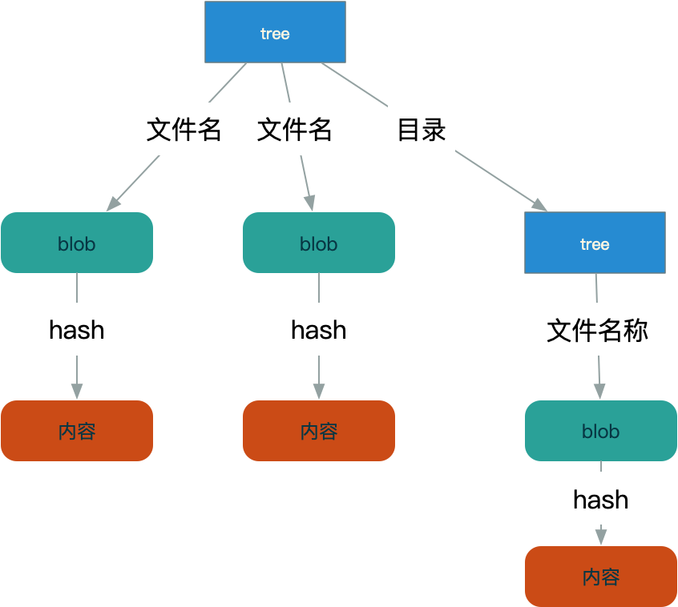

数据对象只对内容感兴趣，而文件名是由树对象保存的，一个树对象包含了一条或多条树对象记录，每条记录含有一个指向数据对象或者子树对象的 SHA-1 指针，以及相应的模式、类型、文件名信息。
- 查询树对象-cat-file -p 分支名称^{tree}
git cat-file -p master^{tree}
100644 blob 4b49c86e5e0ba8d978987e7e26c34bbb6f4903de .codecov.yml
040000 tree ea913ec5ec4401fe12ccabec9e621d7e567ebcc1 .github
100644 blob a98a8a69457027fb94589f819e07c8b41400e285 .gitignore
040000 tree 59d71a469367810b5731212a9c52d38d5db609ad .mvn
100644 blob 32306778b30ef116fc5ed0d25cd8162c6d98b7a6 .travis.yml
100644 blob 0efe5519f8ccbf32f020aeb2556309056562599b CHANGES.md
100644 blob b7c31c2e8d19195a2896cda9ba0823a7bc1acc27 CODE_OF_CONDUCT.md
100644 blob b987b16e65861fbe354154af19eb32d38d2ccbf4 CONTRIBUTING.md
100644 blob bed312a0d6e5d333f76da78fd0e0fa252c18309b DISCLAIMER
100644 blob b85622380cf6c3aba3f4688b256341356918fb8b LICENSE
100644 blob e3151c760357b72265801d74003ea499910e8a19 NOTICE
100644 blob 8cb19f9345551fccd9807ea7b07eac7a1c265fc8 PULL_REQUEST_TEMPLATE.md
100644 blob c1bead4190ad94ce885a010493945ae10b22f61d README.md
040000 tree fd803c8824e9dc233ae2fdb64b6a8b6428ceac32 book
040000 tree 7d0189d7a20438365f2dbb10ddc0a284cec5fce6 codestyle
040000 tree b7d7d1ba78a948b86d64f7af83f7f59df3c1f602 dubbo-all
目录都是用树数据类型表示，而文件是由数据对象类型表示

如何创建树对象？
Git 根据某一时刻暂存区所表示的状态创建并记录一个对应的树对象。步骤如下：
添加文件到暂存区中
echo '123' > a.md echo '123' > com/b.md git update-index --add a.md com/b.md将暂存区内容写入一个树对象
git write-tree
839800f9dd74a17ff9a7a9b3575ce107d0f8885c
这样就将a.md 和b.md 文件写入了一个树对象(839800f9dd74a17ff9a7a9b3575ce107d0f8885c)，由于存在目录原因，所以还创建了一个子树对象-com
如：com 就是一个树类型，它包含一个 数据对象
git cat-file -p 839800f9dd74a17ff9a7a9b3575ce107d0f8885c
100644 blob 72943a16fb2c8f38f9dde202b7a70ccc19c52f34 a.md
040000 tree 073a207091bf15248c6024a41c5fe19bab42d279 com
git cat-file -p 073a207091bf15248c6024a41c5fe19bab42d279
100644 blob ec54548d956b809df95a527e09a0d4f0f767325f b.md